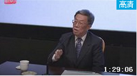

国博讲堂王蒙：传统文化的几个问题
传统文化就是文明演化而汇集成的一种反映民族特质和风貌的民族文化，是民族历史上各种思想文化、观念形态的总体表征。世界各地，各民族都有自己的传统文化。中国的传统文化以儒道互补为内核，还有墨家、名家、释教类、回教类、西学格致类、近代西方文化等文化形态，包括:古文、诗、词、曲、赋、民族音乐、民族戏剧、曲艺、国画、书法、对联、灯谜、射覆、酒令、歇后语等。
传统文化的全称大概是传统的文化(Traditionalculture),落脚在文化，对应于当代文化和外来文化而谓。其内容当为历代存在过的种种物质的、制度的和精神的文化实体和文化意识。例如说民族服饰、生活习俗、古典诗文、忠孝观念之类;也就是通常所谓的文化遗产。
2017-4-30